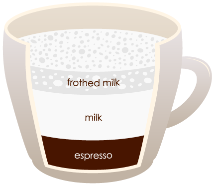

HISTORY OF COFFEE
So, who was the lucky soul to first get to drink coffee? We'll probably never know for sure, but
legends
attribute the discovery to a goat herder named Kaldi. Kaldi lived in the central highlands of
Ethiopia,
the native home of the coffee plant, possibly as early as the 6th century CE. According to
tradition, he
noticed that when his goats ate the red, cherry-like fruit of a certain plant, they became
really
energized and wouldn't sleep at night. So, he tried the fruit himself and experienced a similar
effect.
As a reminder, this was a world before caffeine was a major part of people's lives, so we can
only
imagine what Kaldi's first experience with it must have felt like. Apparently, he enjoyed it and
showed
a local abbot. That abbot realized that the fruit helped him stay awake during evening prayers,
and
shared it around the monastery. Word of this amazing fruit spread quickly across northeast
Africa and
into the Arabian Peninsula, where it became a dietary staple.
Discover more
Types of Coffee
Espresso is a form of concentrated coffee that is usually served as shots. All espresso based drinks
have three common ingredients: espresso, steamed milk and foam. The process of making espresso is called
pulling
a shot in which hot water is pressurized and poured over finely grounded coffee beans. All espresso have
cream
in them which is the froth over it in brownish-red color and gives the rich flavor and smell to the coffee.
Cafe latte is made with espresso and steamed milk of which, one third is espresso and two third is steamed
milk and also consists of at least a centimeter of foam. It is an Italian coffee-based drink that is now
enjoyed by people worldwide and is similar to the French drink cafe au lait. In Italian, cafe latte means
coffee and milk, which defines the purpose of how it is prepared.

Frappuccino is a signature drink of Starbucks but is now available in almost all local coffee shops. The
essential ingredients in a frappuccino are ice, espresso, whole milk, and flavored syrup. It takes somewhere
between 5 to 10 minutes to prepare it. The best part about this drink is that it is topped with a large and
thick whipped cream, adding the Frappuccino is a signature drink of Starbucks but is now available in almost
all local coffee shops. The essential ingredients in a frappuccino are ice, espresso, whole milk, and
flavored syrup. It takes somewhere between 5 to 10 minutes to prepare it.
Cafe mocha is a blend of hot chocolate and cappuccino that is prepared by mixing chocolate powder with an
espresso shot, which is then mixed with skimmed steamed milk, foam and whipped cream. For this process, you
will need one espresso shot, one spoon of chocolate powder, half a cup of steamed milk and 2-3 cm of
microfoam.
Caramel Macchiato is a signature drink of Starbucks that is similar to Frappuccino in taste and can be
brewed in close to 5 minutes. It is perfect for parties or for an evening tea session. The ingredients
needed to make caramel macchiato are cold milk, caramel sauce, 2 shots of strongly brewed espresso, vanilla
syrup and lots of ice.
Turkish coffee, also known as Oriental coffee, is a popular beverage that is enjoyed throughout the Middle
East. It is made in a long handled pot which is mostly made of copper or brass and is called cezve or ibrik.
Ibrik or cezve is usually a long handled pot that comes with a narrow neck and a wider bottom. One rule of
thumb for making this exotic drink is to ensure that your coffee is finely grounded – they cannot be coarse.